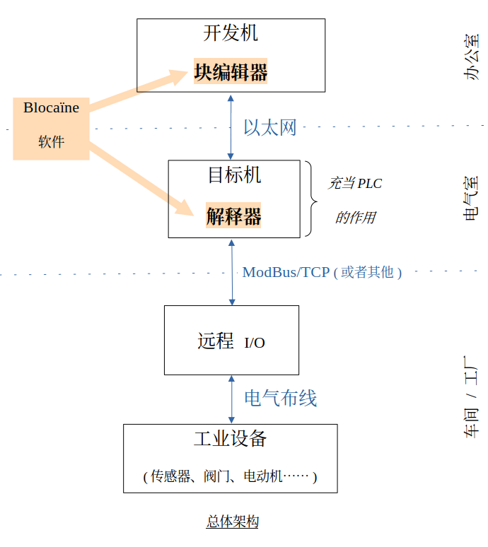

|
|
无 PLC 自动化
为什么使用可编程逻辑控制器而当有远程I/O？
Blocaine 通过功能块图直观地编程自动化系统，并可部署在
Raspberry Pi 或标准 PC 上。
|
|
|

|
|
Blocaïne 将程序设计与程序执行分离
|
|
开发电脑
积木编辑器
- 通过连接功能块创建程序。
- 编译。
- 将程序加载到目标设备。
- 实时变量可视化。
- 变量强制覆盖。
|
目标设备（作为 PLC 运行）。
解释器
- 执行由积木编辑器创建的程序。
- 通过远程 I/O 控制工业设备。
- 通过 OPC UA 与可能的 HMI/SCADA 进行通信。
|
|
|
安装教程
|
|
功能特性
|
| 热加载 | 可以在不停止装置运行的情况下，动态加载程序的新版本。 |
| 编辑 |
- 通过连接功能块进行图形化编程
- 自动生成块的执行顺序
- 自动布局
|
| 有效位 | 每个变量原生都带有一个有效位，并在各功能块之间传播。 |
| Python |
- 动态变量类型
- 功能块可使用 Python 编写
|
| 调试 |
- 目标模拟器（可充当PLC使用）
- 实时变量可视化
- 可对变量进行强制覆盖
|
| 连接性 |
- Web 服务器，用于查看目标设备状态
- OPC UA 服务器，用于与 HMI/SCADA 对接
- ModBus 客户端，用于控制远程 I/O
|
| 开源 | Blocaïne 为免版税开源软件。 |
|
|
|
技术说明
|
|
优势
| 理念 | KISS —— Keep It Simple, Stupid（保持简单） |
| 高级功能 | “热加载”、有效位、动态类型…… |
| 成本 | 低成本（硬件与软件） |
| 许可证 | 免费且开源。源码完全公开并可修改。 |
| 过时风险 | 依托长期稳定的标准（Python、Ethernet、PC），尽可能降低技术过时风险。 |
|
限制
| CPU 资源 | 不适合大型、CPU 密集型项目——在 Raspberry Pi 5 上，一个基础的 “System” 功能块约耗时 2 微秒（最高约 0.5 百万块/秒）。 |
| 实时性 | 不是“硬实时”系统——在 Raspberry Pi 5 上，延迟仍可保持在 1 毫秒以下。 |
| 库 | 某些预期中的 “System” 功能块可能仍未提供。 |
|
|
|
项目进展
|
Blocaïne 的测试版已发布到 GitHub。为了便于评估与安装，下载版本已配置为：
- 积木编辑器和解释器运行在同一台电脑上，从而免去网络配置；
- 部分功能被禁用（OPC、GPIO、ModBus/TCP），从而无需安装特定的 Python 模块。
下载并开始使用 Blocaïne 只需 3 分钟。
下载后，只需先启动 解释器，再启动 积木编辑器；两者之间会自动连接，随后即可开始评估 Blocaïne。
安装与评估流程
|
|
|
|
|
|
|